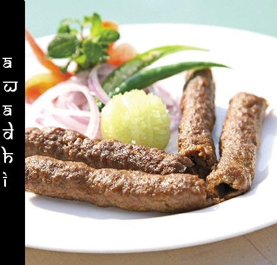

WE SERVE YOU THE MOST FAMOUS CUISINES OF INDIA.
AWADHI CUISINE
Lucknow which was the seat of awad culture,brings to
mind the tradition of 'pelhe aap' , the language
dripping with politeness n the life style of the nawabs but
what appeals the most is the cuisine of awadh which in
some ways was a culmination of all that was best in art
culture n science. The daily repast is an integral part
point for the family. For the three generations in awadh
the family sits together around the DASTARKHWAN
dining spread to enjoy their meal. In this region
exculsive use of ingredients such as various spices, ghee
or clarified butter is used this makes it different and
remarkable cuisine. Also the people and cooks in this
region believes that sahaj pakey so meetha hoi meaning
that which is cooked by slow method is more tasteful.
1 | 2 | 3 | 4 | 5